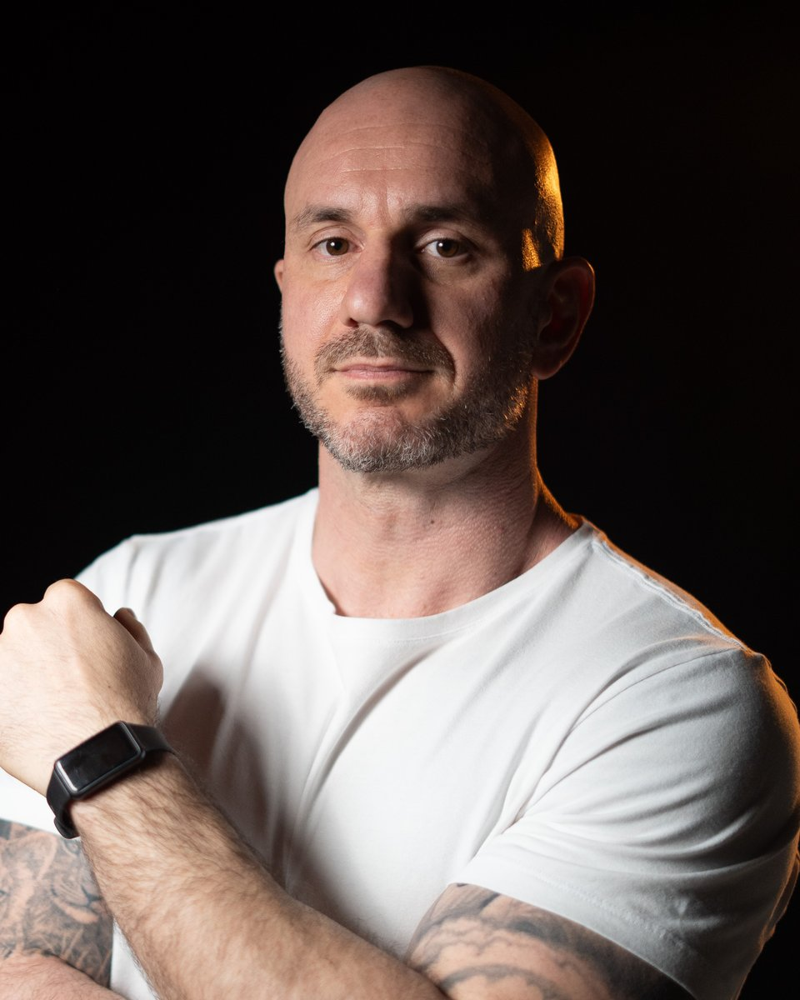

Liberação Miofascial
80% prático, supervisionado na maca. Cervical, lombar e pelve, membro inferior e antebraço.
Mais informações27/02/20278h às 18h
UniMetrocamp, Campinas, SP
UniMetrocamp, Campinas, SP
Cursos práticos para fisioterapeutas e estudantes
Fisioterapeuta D.O. em Osteopatia, Quiropraxista, com mais de 20 anos de experiência. Especialista pelo COFFITO, formação internacional Belgo-Espanhola e docente.

Trajetória
A trajetória completa está na página Sobre.
Início da docência em pós-graduação na Unimetrocamp e na Faculdade Inspirar.
Registro de especialidade em 14/06/2022.
Publicada no International Journal of Health Science (Atena Editora). Reúne dois ensaios clínicos randomizados, e o GRADE classificou a certeza da evidência como muito baixa. Ler o artigo.
Cursos
Turmas presenciais, com prática e material incluído.
80% prático, supervisionado na maca. Cervical, lombar e pelve, membro inferior e antebraço.
Mais informaçõesDois módulos que se completam: Coluna Vertebral e Membros & ATM.
Mais informaçõesTestes neurodinâmicos e técnicas de mobilização neural integradas à terapia manual, com revisão no laboratório de anatomia.
Mais informaçõesPara instituições
Ministro cursos presenciais e workshops de terapia manual para instituições de ensino e de educação continuada.
Disponível para viajar. Turmas em outras cidades, com carga horária e formato intensivo definidos com a coordenação.
Conteúdo ajustado ao perfil da turma, com anatomia aplicada, prática supervisionada e discussão de casos.
Formato curto para cursos de graduação, como o workshop de manipulação e mobilização vertebral na Faculdade Einstein.
Quem já fez
Cadastro de interessados
Você recebe o aviso antes da abertura das inscrições.
Calendário
Em breve, todas as datas em um só lugar, com inscrição direta em cada turma.